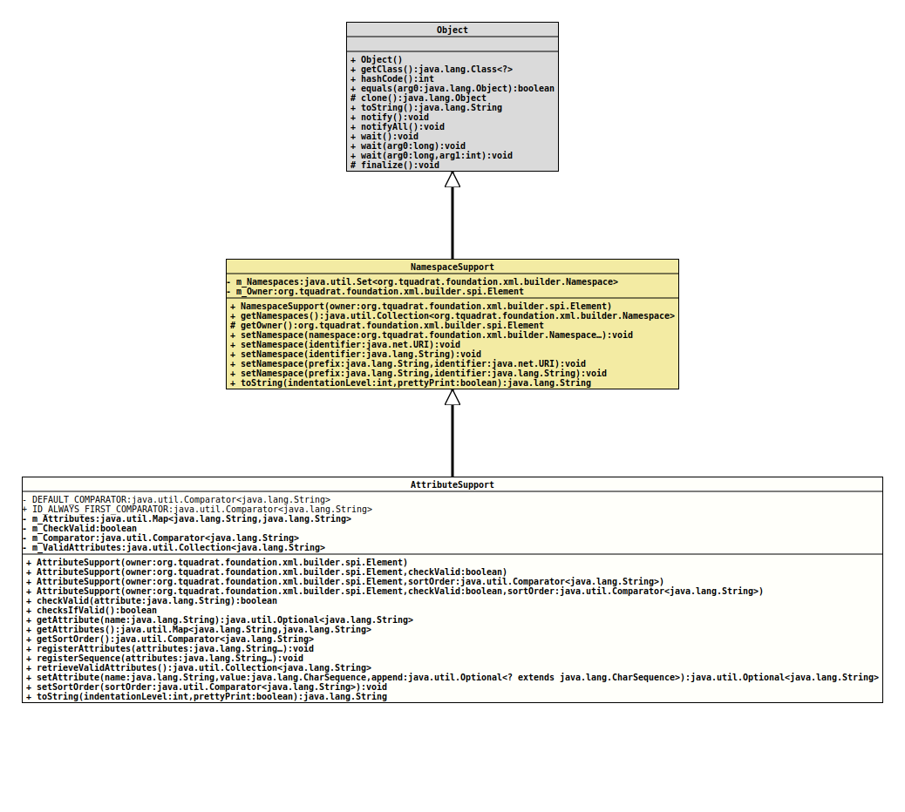

Class AttributeSupport
This class provides the support for attributes to elements.
For some SGML elements, their attributes should be ordered in a given sequence, either because of convenience or because of deficits of the parser processing them.
This class provides a specific comparator for each named element that can be configured by the user.
- Author:
- Thomas Thrien (thomas.thrien@tquadrat.org)
- Version:
- $Id: AttributeSupport.java 840 2021-01-10 21:37:03Z tquadrat $
- Since:
- 0.0.5
- UML Diagram
-

UML Diagram for "org.tquadrat.foundation.xml.builder.spi.AttributeSupport"
{kind=link}
-
Field Summary
FieldsModifier and TypeFieldDescriptionprivate static final Comparator<String>The default comparator that is used for attribute ordering if no other comparator is provided.static final Comparator<String>AComparatorthat ensures that "xml:id" is always the first attribute.The attributes for the element.private final booleanFlag that indicates whether the validity of attributes should be checked.private Comparator<String>The comparator that determines the sequence for the attributes of the owning element.private final Collection<String>The valid attributes for owning element. -
Constructor Summary
ConstructorsConstructorDescriptionAttributeSupport(Element owner) Creates a newAttributeSupportinstance that checks whether attributes are valid to be added.AttributeSupport(Element owner, boolean checkValid) Creates a newAttributeSupportinstance.AttributeSupport(Element owner, boolean checkValid, Comparator<String> sortOrder) Creates a newAttributeSupportinstance.AttributeSupport(Element owner, Comparator<String> sortOrder) Creates a newAttributeSupportinstance that checks whether attributes are valid to be added. -
Method Summary
Modifier and TypeMethodDescriptionfinal booleanReturns a flag that indicates whether an extended validity check is performed on attributes before adding them.final booleancheckValid(String attribute) Checks whether an attribute with the given name is valid for the owning element.getAttribute(String name) Returns the value for the attribute with the given name.Provides read access to the attributes.final Comparator<String>Returns the attribute sort order.final voidregisterAttributes(String... attributes) Registers the valid attributes for the owning element.final voidregisterSequence(String... attributes) Registers an attribute sequence for the owning element; this modifies any sort order that was previously set.final Collection<String>Returns the list of the registered attributes.setAttribute(String name, CharSequence value, Optional<? extends CharSequence> append) Sets the attribute with the given name.final voidsetSortOrder(Comparator<String> sortOrder) Sets the comparator that determines the sequence of the attributes for the owning element.final StringtoString(int indentationLevel, boolean prettyPrint) Returns the attributes and their values, together with the namespaces, as a single formatted string.Methods inherited from class org.tquadrat.foundation.xml.builder.spi.NamespaceSupport
getNamespaces, getOwner, setNamespace, setNamespace, setNamespace, setNamespace, setNamespace
-
Field Details
-
DEFAULT_COMPARATOR
The default comparator that is used for attribute ordering if no other comparator is provided. -
ID_ALWAYS_FIRST_COMPARATOR
AComparatorthat ensures that "xml:id" is always the first attribute. -
m_Attributes
The attributes for the element. -
m_CheckValid
Flag that indicates whether the validity of attributes should be checked. -
m_Comparator
The comparator that determines the sequence for the attributes of the owning element. -
m_ValidAttributes
The valid attributes for owning element.
-
-
Constructor Details
-
AttributeSupport
Creates a newAttributeSupportinstance that checks whether attributes are valid to be added.- Parameters:
owner- The element that owns thisAttributeSupportinstance.
-
AttributeSupport
Creates a newAttributeSupportinstance.- Parameters:
owner- The element that owns thisAttributeSupportinstance.checkValid-truewhen the validity of attributes should be checked,falseif all attributes can be added.
-
AttributeSupport
Creates a newAttributeSupportinstance that checks whether attributes are valid to be added.- Parameters:
owner- The element that owns thisAttributeSupportinstance.sortOrder- The comparator that determines the sort order for the attribute of the owning element.
-
AttributeSupport
Creates a newAttributeSupportinstance.- Parameters:
owner- The element that owns thisAttributeSupportinstance.checkValid-truewhen the validity of attributes should be checked,falseif all attributes can be added.sortOrder- The comparator that determines the sort order for the attribute of the owning element.
-
-
Method Details
-
checkValid
Checks whether an attribute with the given name is valid for the owning element.
The attribute is valid if there is a respective entry in the list of valid attributes, or when
checksIfValid()returnsfalse.- Parameters:
attribute- The name of the attribute.- Returns:
trueif the attribute is valid for the given element,falseotherwise.- Throws:
InvalidXMLNameException- The attribute name is invalid.
-
checksIfValid
Returns a flag that indicates whether an extended validity check is performed on attributes before adding them.- Returns:
trueif extended validation are performed,falseif attribute can be added.- See Also:
-
getAttribute
Returns the value for the attribute with the given name.- Parameters:
name- The attribute name.- Returns:
- An instance of
Optionalthat holds the value for that attribute.
-
getAttributes
Provides read access to the attributes.- Returns:
- A reference to the attributes.
-
getSortOrder
Returns the attribute sort order.- Returns:
- The comparator that determines the attribute's sequence.
-
registerAttributes
Registers the valid attributes for the owning element.
Nothing happens if
checksIfValid()returnsfalse, although a call to this method is obsolete then.- Note:
-
- The given attributes will be added to the already existing ones!
- Parameters:
attributes- The names of the valid attributes.- Throws:
InvalidXMLNameException- One of the attribute names is invalid.
-
registerSequence
Registers an attribute sequence for the owning element; this modifies any sort order that was previously set.
The names for the attributes are not validated; in particular, it is not checked whether an attribute is listed as valid.
- Parameters:
attributes- The names of the attributes in the desired sequence.
-
retrieveValidAttributes
Returns the list of the registered attributes.- Returns:
- The registered attributes.
-
setAttribute
public final Optional<String> setAttribute(String name, CharSequence value, Optional<? extends CharSequence> append) throws IllegalArgumentException Sets the attribute with the given name.
The given attribute name is validated using the method that is provided by
XMLBuilderUtils.getAttributeNameValidator().- Parameters:
name- The name of the attribute; the name is case sensitive.value- The attribute's value; ifnullthe attribute will be removed.append- If not empty, the new value will be appended on an already existing one, and this sequence is used as the separator.- Returns:
- An instance of
Optionalthat holds the former value of the attribute; will beOptional.empty()if the element did not have an attribute with the given name before. - Throws:
IllegalArgumentException- The attribute name is invalid or the attribute is not valid for the element that owns this instance ofAttributeSupport.
-
setSortOrder
Sets the comparator that determines the sequence of the attributes for the owning element.- Parameters:
sortOrder- The comparator.
-
toString
Returns the attributes and their values, together with the namespaces, as a single formatted string.- Overrides:
toStringin classNamespaceSupport- Parameters:
indentationLevel- The indentation level.prettyPrint- The pretty print flag.- Returns:
- The attributes string.
-